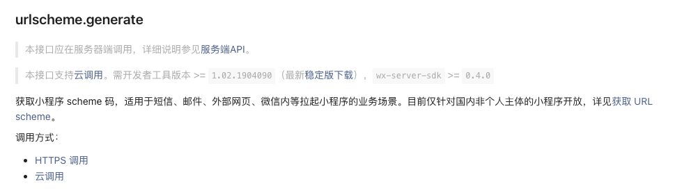

H5页面可以用普通链接跳转小程序，普通链接打开小程序接口地址

通过调用该方法获取小程序的 URL Scheme，
生成的 URL Scheme 如下所示：
weixin://dl/business/?t= *TICKET*iOS系统支持识别 URL Scheme，可在短信等应用场景中直接通过 Scheme 跳转小程序。
Android系统不支持直接识别 URL Scheme，用户无法通过 Scheme 正常打开小程序，开发者需要使用 H5 页面中转，再跳转到 Scheme 实现打开小程序，跳转代码示例如下：
location.href = 'weixin://dl/business/?t= *TICKET*'该跳转方法可以在用户打开 H5 时立即调用，也可以在用户触发事件后调用。
1、该方式适用于短信、邮件、外部网页、微信内等拉起小程序的业务场景，并不限于微信内部
2、该方法需要获取小程序的 access_token， 只有拥有小程序的权限才能使用，若小程序都不是你的，无法获取 access_token， 可以使用 微信开放标签 的方式
3、该功能基本覆盖当前用户正在使用的微信版本，开发者无需进行低版本兼容
4、只能生成已发布的小程序的 URL Scheme
5、仅针对国内非个人主体的小程序开放
微信开放标签是微信公众平台面向网页开发者提供的扩展标签集合。通过使用微信开放标签，网页开发者可安全便捷地使用微信或系统的能力，为微信用户提供更优质的网页体验。
微信开放标签使用步骤与微信 JS-SDK 类似，也需要引入 JS 文件等步骤。如果是公众号身份的网页，需要绑定安全域名。
跳转小程序的开放标签是：wx-open-launch-weapp
已认证的服务号，服务号绑定“JS接口安全域名”下的网页可使用此标签跳转任意合法合规的小程序。
已认证的非个人主体的小程序，使用小程序云开发的静态网站托管绑定的域名下的网页，可以使用此标签跳转任意合法合规的小程序。
1、所有开放标签都能像普通的 HTML 标签一样在页面中直接使用，不需要再进行额外的处理。
2、微信开放标签有最低的微信版本要求，以及最低的系统版本要求。
微信版本要求为：7.0.12及以上
系统版本要求为：iOS 10.3及以上、Android 5.0及以上
3、该方式只需要知道小程序的原始id和跳转路径即可跳转，不需要小程序专门配合。对于跳转到不是自己的小程序比较方便。
4、微信内的网页如需打开小程序官方建议使用微信开放标签 - 小程序跳转按钮 的方式，
[1] 普通链接打开小程序接口地址: https://developers.weixin.qq.com/miniprogram/dev/api-backend/open-api/url-scheme/urlscheme.generate.html[2] URL Scheme: https://developers.weixin.qq.com/miniprogram/dev/framework/open-ability/url-scheme.html[3] 微信开放标签: https://developers.weixin.qq.com/doc/offiaccount/OA_Web_Apps/Wechat_Open_Tag.html#%E5%BC%80%E6%94%BE%E6%A0%87%E7%AD%BE%E8%AF%B4%E6%98%8E%E6%96%87%E6%A1%A3[4] 微信开放标签使用步骤: https://developers.weixin.qq.com/doc/offiaccount/OA_Web_Apps/Wechat_Open_Tag.html